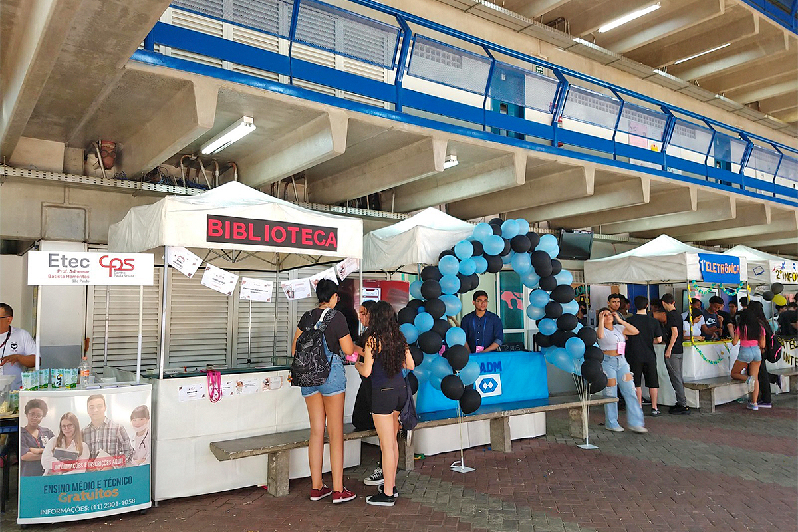

Feira das Profissões 2024 da Etec Adhemar Batista Heremitas Destaca Projetos Inovadores
A Feira das Profissões é um evento anual realizado pela Etec Adhemar Batista Heremitas, onde os alunos têm a oportunidade de apresentar projetos relacionados aos seus cursos. O objetivo principal da feira é proporcionar aos estudantes uma visão abrangente das diversas possibilidades de carreira, além de promover a interação entre os alunos e os profissionais de diferentes áreas.
No dia 23 de outubro, a feira contará com a participação de alunos, professores e convidados, que oferecerão orientações práticas e dicas de carreira.
Entrevista com Alunos
Durante a feira, nossos repórteres tiveram a oportunidade de entrevistar dois alunos: Álvaro, da primeira turma de Eletrônica, e Guilherme, do curso de Recursos Humanos.
"Acho a feira muito bacana, pois nos permite mostrar o que aprendemos e como podemos aplicar na prática," comentou Álvaro sobre seu projeto de inteligência artificial.
"É importante discutir temas históricos e sociais, e a feira nos dá essa oportunidade," destacou Guilherme sobre seu projeto que aborda a ditadura.
Os repórteres perguntaram a Álvaro sobre como ele está desenvolvendo seu projeto e quais desafios ele enfrentou. Já para Guilherme, as perguntas incluíram quais aspectos da ditadura ele considera mais relevantes para o projeto e como ele pretende apresentar isso durante a feira.